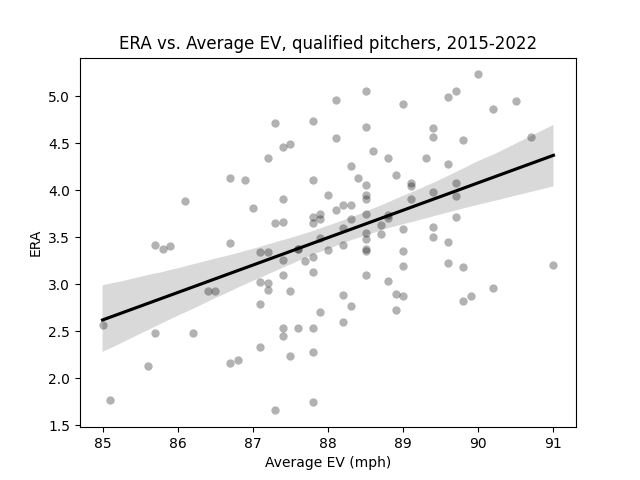
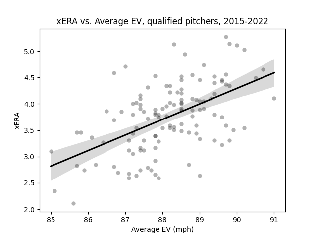
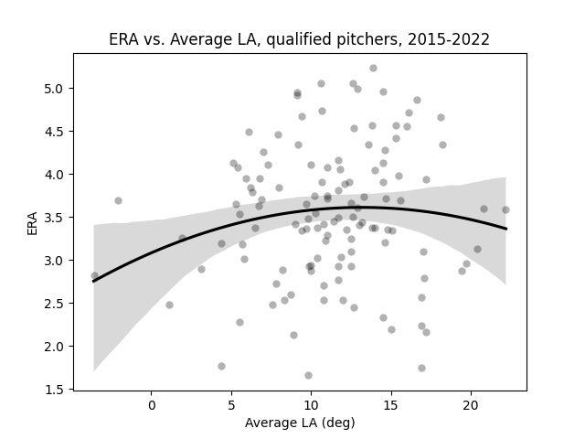
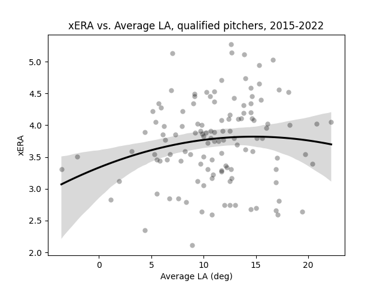

Introducing Defense-Aware ERA
by A. Kline
Posted on 06/16/2023
Eleven months ago I wrote a post about defense-independent pitching statistics, in particular fielding-independent pitching (which I mistakenly referred to as field-independent pitching, though in my defense, the latter is much smoother off the tongue). In summary, I articulated my belief that although FIP was instrumental for its time in highlighting some of the issues with evaluating pitchers by more results-oriented stats like ERA, it comes with its fair share of problems, and nowadays there are definitely alternatives that can (and frankly should) be used in its place.
My biggest issue with FIP (and DIPS in general) is that it attempts to address the issue of batted ball randomness by ignoring it completely. In a world where balls in play were no more common than hit batsmen, this would not be a major issue, but contrary to all indications from recent rule changes, balls in play are still a massive part of the game of baseball and will not be disappearing anytime soon. There have been some defenders of FIP as well as critics of critics of it, and to their credit, a not insignificant minority of their points are valid. At the same time, though, sticking with FIP in 2023 seems a bit strange when significantly better options are available.
Skill-interactive ERA (SIERA) addresses the batted ball issue by looking at the proportion of batted balls each pitcher allows that are scored as ground balls, fly balls, and line drives. As a result of this, it has been shown to be a better predictor of future ERA than FIP by a not insignificant margin. However, SIERA still has its problems. For one, there is not a ton of consistency in which batted balls are considered fly balls vs. ground balls vs. line drives, especially prior to the Statcast era. Also, the formula for SIERA is, to put it kindly, not the prettiest thing I’ve ever seen.
So what exactly is my goal here? In the FIP post, I talked about my wish to see defense-independent pitching statistics replaced by “defense-aware pitching statistics,” though never proposed any specific solutions. Here, I want to create a pitching statistic that has the following traits: 1) the simplicity and ease of calculation of FIP, 2) the predictive ability of future ERA at least on par with SIERA, and 3) the incorporation of modern Statcast batted-ball data. Checking all three of these boxes may not even be possible, but I will try. Starting with point number 1, I envisioned my formula being linear, following the general structure seen below:
Defense-Aware ERA (DAERA) = β_0 + β_1*(K%) + β_2*(BB%)+ β_3*(f(AvgEV)) + β_4*(g(AvgLA)),
where AvgEV = the avg exit velocity on batted balls allowed and AvgLA = the avg launch angle; f,g = functions such that the overall formula can be written linearly; and β_0,...,β_4 are constants
My next step was to find the functions f and g such that the final stat could achieve what SIERA never could: a linear formula. To do this, I analyzed the relationship between average exit velocity/average launch angle with ERA/xERA.
Among all qualifying pitcher-seasons from 2015 through 2022 (excluding 2020), there exists a linear relationship between average exit velocity on batted balls allowed and ERA for that season. (Data: Baseball Savant)
According to the data, the relationship between a pitcher’s average EV on batted balls allowed and their ERA for the season is linear. This is to be expected–higher exit velocities are categorically more dangerous from a pitcher’s perspective. As a sanity check, I decided to replace ERA with Statcast xERA and see if the correlation changed at all.
The relationship between average exit velocity on batted balls allowed and xERA among the same sample as before. Like the graph above, this relationship is linear. (Data: Baseball Savant)
Reassuringly, the relationship retains roughly the same slope and intercept, and more importantly, remains linear. This means we can be safe writing the function f as the identity function, or in other words,
f(AvgEV) = AvgEV
Launch angle is a different story, however. While higher launch angles are more correlated with home runs, and therefore with worse pitcher outcomes, this is only true up to a point. wOBA on batted balls begins to decrease with launch angles above roughly 28 degrees, and falls below .100 once you get past 42 degrees. Pitchers like Kenley Jansen and Nestor Cortes often use fly balls to get outs, and in doing so see greater levels of success than many pitchers with lower average launch angles. That being said, low launch angles are also ideal because ground balls are about as likely to end up in a fielder’s glove as fly balls, and unlike fly balls come without the inherent chance of a home run. As a result, we should expect the relationship between average launch angle and ERA to follow a parabolic curve, with ERA peaking at some launch angle likely in the line drive range. So is this what we get?
Using the same sample as before, we can see that the relationship between average launch angle allowed and ERA is roughly parabolic. (Data: Baseball Savant)
My guess, as it turns out, appears to be correct. Like with EV, I decided to replace ERA with xERA and rerun the correlation just to see if it stayed roughly the same.
Like the one shown above, the relationship between average launch angle allowed and xERA is parabolic. (Data: Baseball Savant)
Brilliant. I then decided that the function g in the defense-aware ERA formula should be the same as the curve in the above regression, which would punish pitchers the most for an average launch angle allowed of about 14-15 degrees. Unfortunately, there was no way for me to automatically extract the exact regression formula calculated, so I had to manually approximate it. I called the result of this work “launch angle optimality,” a stat which punishes pitchers with less optimal average launch angles with higher values:
Launch Angle Optimality (LAO) = -0.0023(AvgLA - 14.5)^2 + 3.835 = g(AvgLA)
Now we can rewrite the formula for defense-aware ERA as follows:
DAERA = β_0 + β_1*(K%) + β_2*(BB%)+ β_3*(AvgEV) + β_4*(LAO)
My next step was to run a linear regression on the sample used to find the coefficients that are most optimal, where in this case “optimal” means “best predicts future ERA,” where “future” means the next season. To do this, I assembled a list of all pitchers deemed qualified according to Fangraphs in the 2015, 2016, 2017, 2018, and 2021 seasons who were also qualified in the following season. I then ran a linear regression using strikeout percentage, walk percentage, average exit velocity, and launch angle optimality in year 1 as the independent variables and ERA in year 2 as the dependent variable. According to the regression, the error-minimizing coefficients β_0, ..., β_4 are as follows:
DAERA = -8.18 + -7.07*(K%) + 7.05*(BB%)+ 0.14*(AvgEV) + 0.13*(LAO)
The t-values for β_0, ..., β_4 were -1.440, -5.307, 1.929, 2.609, and 0.144, with corresponding probabilities 0.152, 0.000, 0.056, 0.010, and 0.885*. I then replaced defense-aware ERA with other pitcher stats meant to better reflect the “true skills” of a pitcher, like FIP, xFIP, SIERA, xERA, as well as ERA itself, to compare the relative predictive power of all of those stats with future ERA as measured by R^2 in the sample used. Here are my results:
| Metric | R^2 |
| ERA | 0.075 |
| FIP | 0.093 |
| xFIP | 0.039 |
| SIERA | 0.091 |
| xERA | 0.177 |
| DAERA | 0.231 |
This is convincing, but far from infallible. For one, SIERA is a worse predictor of future ERA than FIP is in this sample, and xFIP actually does a worse job than FIP by a wide margin. This is likely a result of the small sample size used, though since Statcast data has only been available since 2015, there isn’t much I can do about this. Oh well. That being said, there are more robust, long-term R^2 values available for all of these metrics (excluding xERA) in regards to predicting ERA, and the DAERA value above still bests those comfortably.
With the optimal formula found, I decided to calculate DAERA values for all pitcher-seasons that have one (excluding this year); specifically, all pitcher-seasons since 2015 with at least one batted ball event. One aspect of FIP I like is that it is always adjusted such that the league average FIP is equal to the league average ERA in any given season, so I decided to replicate that with DAERA:
DAERA = -8.18 + -7.07*(K%) + 7.05*(BB%)+ 0.14*(AvgEV) + 0.13*(LAO) + C,
where C = lgERA - (-8.18 + -7.07*(lgK%) + 7.05*(lgBB%)+ 0.14*(lgAvgEV) + 0.13*(lgLAO))
As a result, each pitcher-season DAERA included in the dataset above is adjusted such that the league average DAERA in a given season is equal to the league average ERA in that season.
One question I can foresee being asked is why I bothered creating a new, Statcast-based ERA estimator when xERA already exists. After all, xERA has existed for years and has been a significantly more accurate predictor of ERA than FIP or SIERA during that time. While this is true, I will remind the reader of one of FIP’s greatest strengths: its simplicity. And as good as xERA is, it cannot really be considered “simple.” Indeed, beyond the statement that it’s a rescaled version of xwOBA, the calculation process for xERA is somewhat nebulous. In contrast, the calculation for DAERA is simple, easy to replicate, and written right on this page.
I want to finish this post by emphasizing that DAERA is not meant to be an end-all, be-all stat for estimating what a pitcher’s ERA “should” be. It’s entirely possible (if not likely) that a much bigger trove of data will become available in the coming years, therefore necessitating the next step in pitcher ERA estimation. But that will not stop me from tweaking and updating the formula as I see fit, ensuring its predictive power and relative simplicity remain. Like the rest of this site, DAERA will be a perpetual work-in-progress.
* Yes, I am aware that the t-value for LAO is not significant–nor is it even close. In my defense, I tried a variety of other formulas for LAO that had little to no effect. I also tried replacing both the average EV and LAO terms with one term for barrel percentage allowed and reran the regression, but the resulting R^2 value was actually a fair bit worse. As a result, I decided to stick with my original formula–for now.